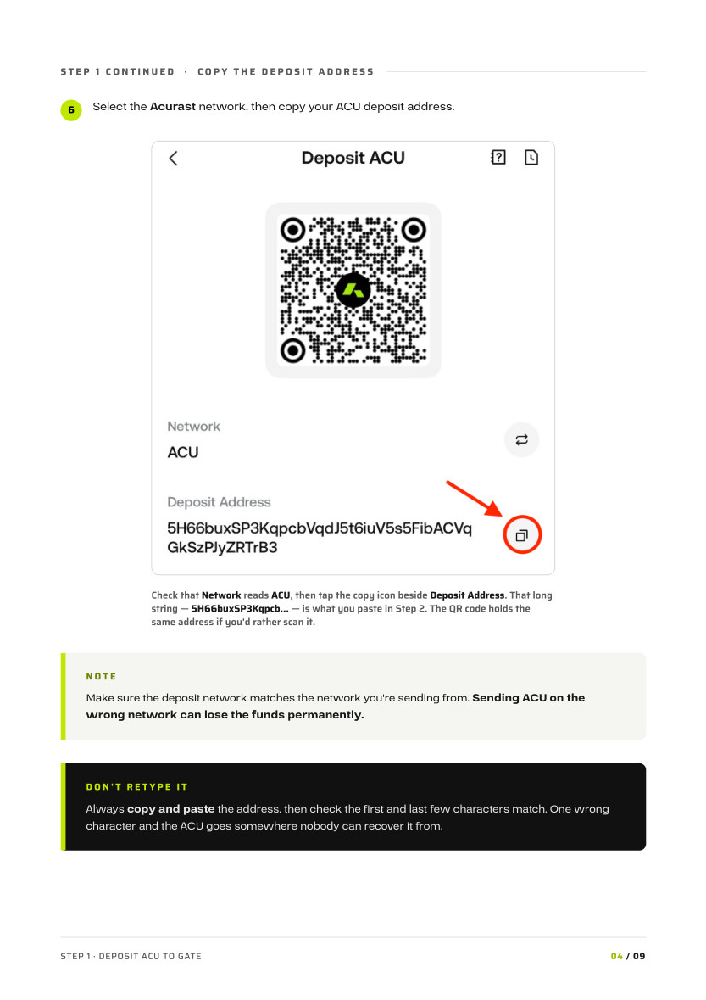
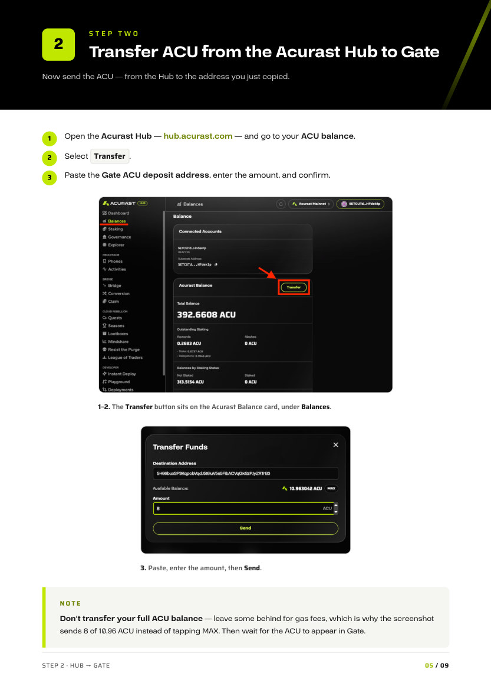
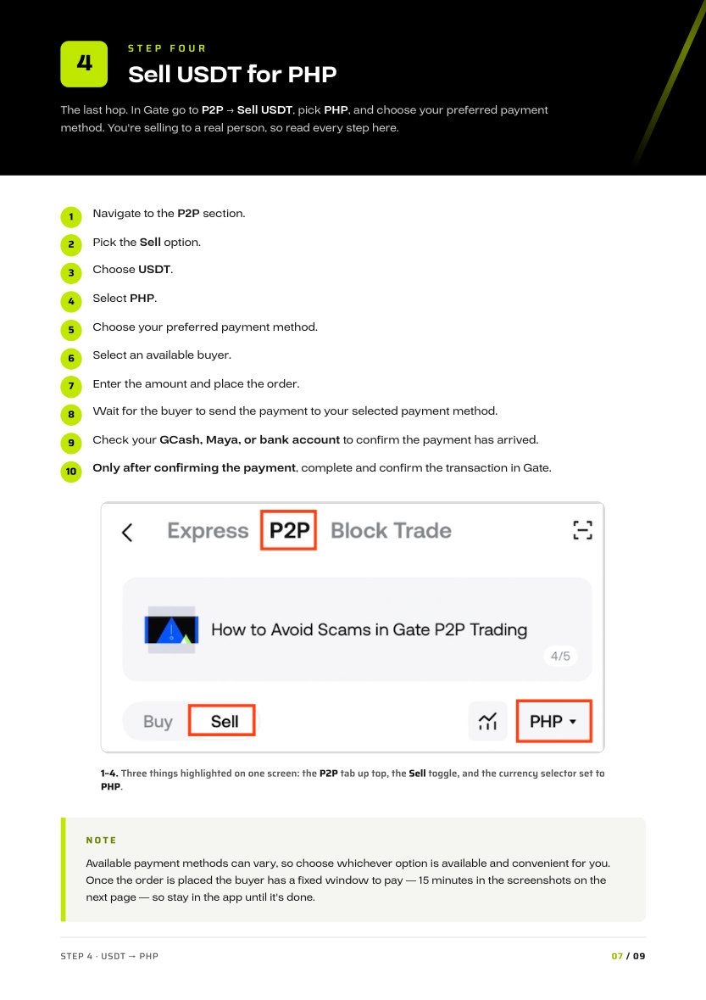
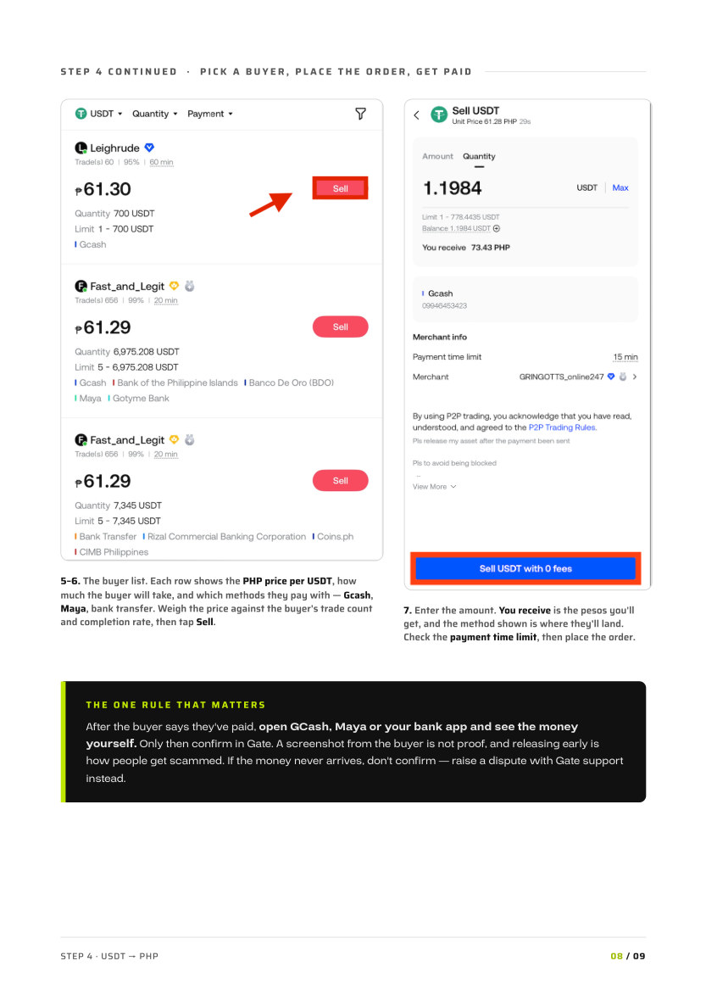

Acurast Hub account with ACU
Where your rewards land. Sign in at hub.acurast.com and check your ACU balance.
COMMUNITY WITHDRAWAL GUIDE
Turn your Acurast rewards into pesos — step by step.
Received some ACU for providing compute on Acurast and want it in your GCash, Maya or bank account? This guide walks the whole route in four steps, with a screenshot for every tap.
BEFORE YOU START
Where your rewards land. Sign in at hub.acurast.com and check your ACU balance.
The exchange you'll route through — based on community feedback, the easiest and cheapest route. You need it verified and ready to receive a deposit.
GCash, Maya, or a bank account — whatever you want the pesos to arrive in.
In P2P trading you hold the USDT until the buyer pays. Never confirm or release the transaction in Gate until you have opened GCash, Maya or your bank app and seen the money arrive. Once you confirm, the USDT is gone.
STEP ONE
First, get your ACU deposit address from Gate. You're not sending anything yet — you're just fetching the address your ACU will be sent to.
Select the Acurast network, then copy your ACU deposit address.

STEP TWO
Now send the ACU — from the Hub to the address you just copied.
Open the Acurast Hub — hub.acurast.com — and go to your ACU balance.

STEP THREE
ACU doesn't sell straight into pesos, so first swap it for USDT — the dollar stablecoin that PHP buyers actually trade against.

STEP FOUR
The last hop. In Gate go to P2P → Sell USDT, pick PHP, and choose your preferred payment method. You're selling to a real person, so read every step here.


REMEMBER FOR NEXT TIME
The deposit network on Gate has to match the network you send from. Wrong network, lost ACU.
Never transfer your full ACU balance out of the Hub. Leave a little behind to pay transaction fees.
Don't start trading until the ACU has actually landed in your Gate balance. Transfers take a moment.
In P2P, see the pesos in your own app first, then release. Never the other way round.
THAT'S IT
ACU in the Hub, pesos in your pocket. Four things worth remembering for next time.
Every phone running on the Acurast network receives ACU for the compute it provides. Check your balance, rewards and staking in the Hub.
No hardware? You can also delegate tokens to get a share of the reward.